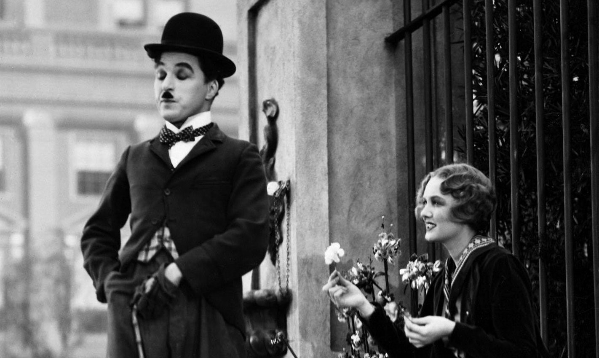

1911 - 1926

The Silent Era was the beginning of organised productions where movies were now being made using multiple reels of film. Films during this era
of film history were longer, slightly edited, used minimal sound effects and musical tracks, had zero dialogue, and emphasized professional-made narrative drama, romances and comedies. There was also an advancement in film techniques including silhoette effects, animation (frame and
clay), cross cuts, artificial lighting and reverse-angle cuts.
The Silent Era became an important era in film history when actors began receiving acknowledgement of their talent and work in the films' credits.
The era of the phenomenal Charlie Chaplin